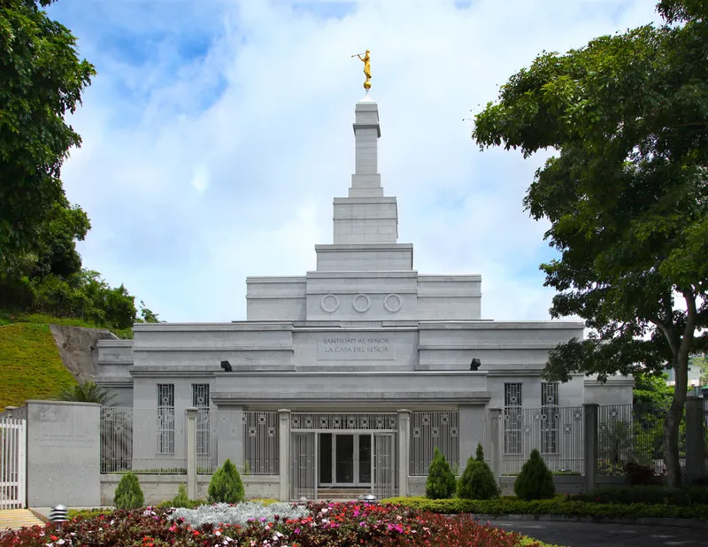
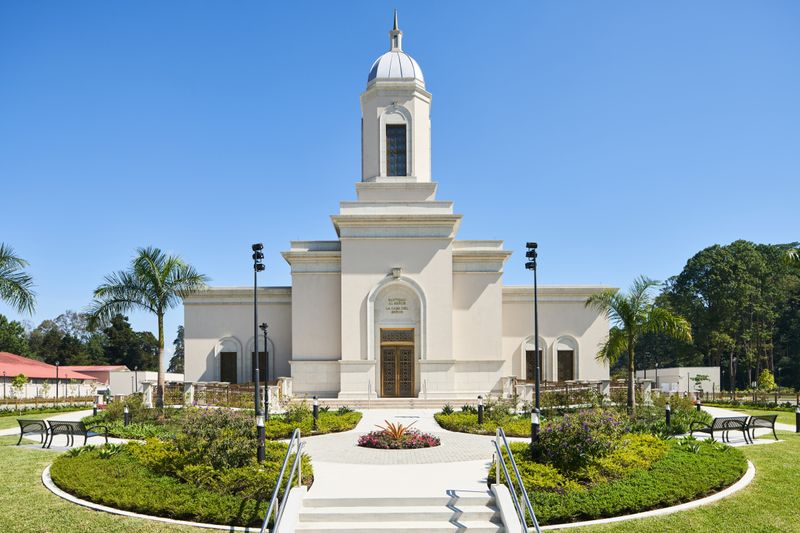
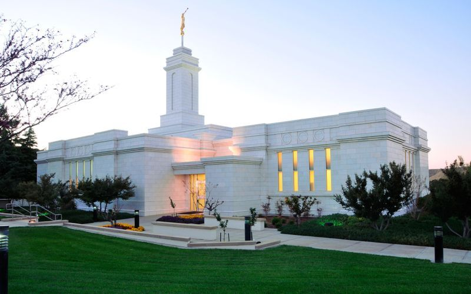
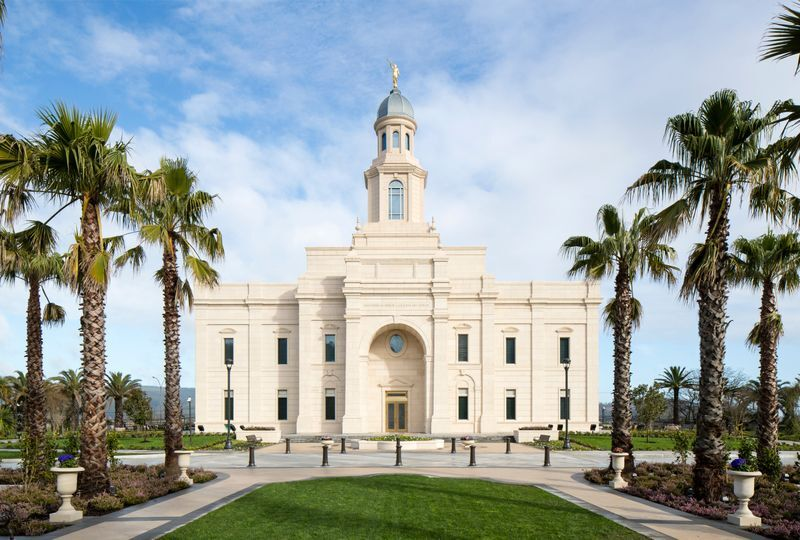
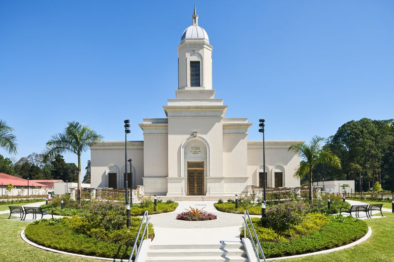
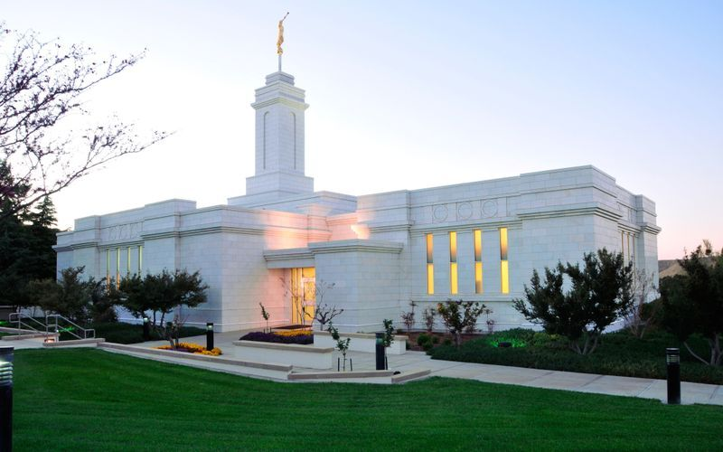
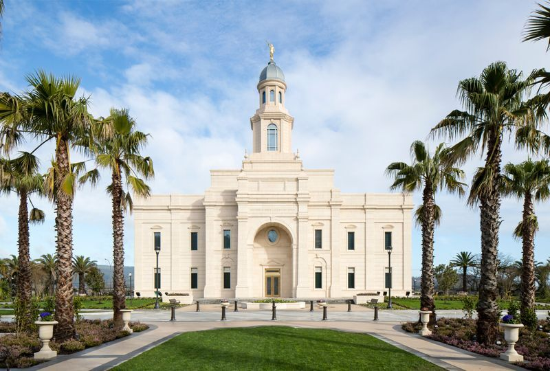

Temples Around the World

Caracas, Venezuela - Temple
Auckland, New Zealand - Temple
 Barranquilla, Columbia - Temple
Barranquilla, Columbia - Temple
 Belem, Brazil - Temple
Bern, Switzerland - Temple
Belem, Brazil - Temple
Bern, Switzerland - Temple
 Brasilia, Brazil - Temple

Coban,Guatemala - Temple

Colonia Juarez, Mexico - Temple

Concepcion, Chile - Temple
Brasilia, Brazil - Temple

Coban,Guatemala - Temple

Colonia Juarez, Mexico - Temple

Concepcion, Chile - Temple